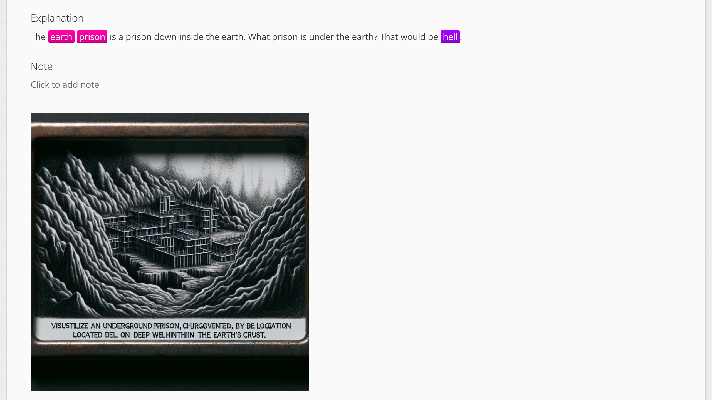
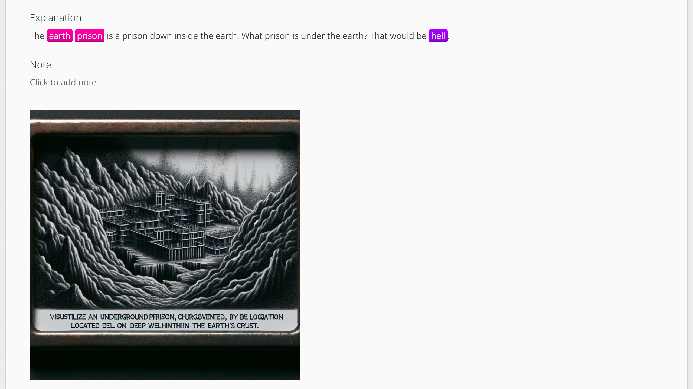
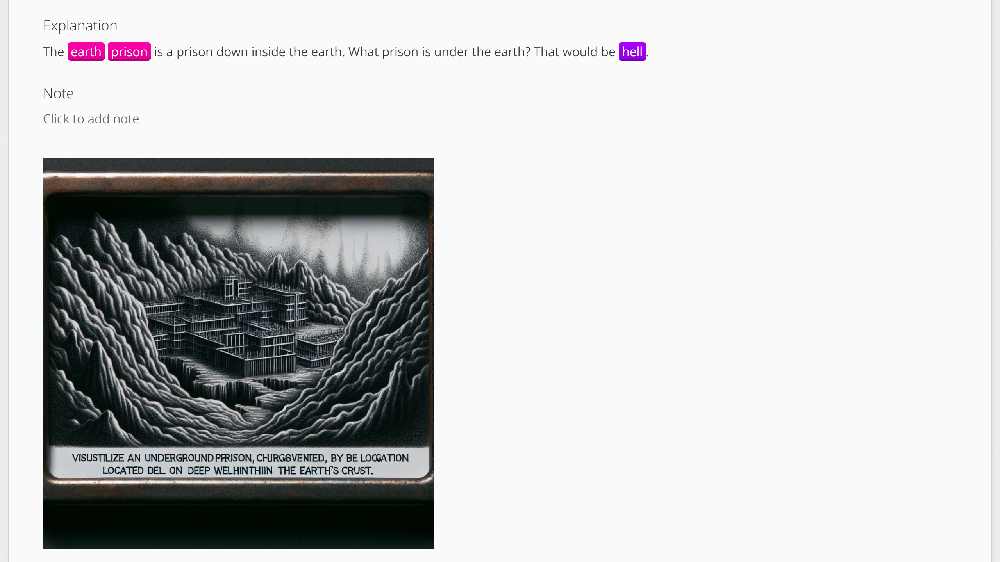

Generate and display mnemonic images on WaniKani.

Install TamperMonkey:
Install the Userscript.
Any images previously generated by a user will be displayed on their respective subject pages and during reviews.
If an image has yet to be generated, a button will be shown allowing you to generate one.
The API server code and the UserScript are hosted on GitHub here.